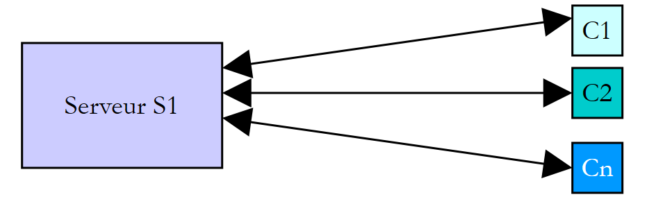

8. Execution Threads
This chapter introduces the simultaneous execution of multiple pieces of code within a single program: threads (execution threads) and the tools used to synchronize them. In 2008, most machines had only one processor, and parallelism was largely an illusion maintained by the operating system. Today, even the most basic laptop has multiple cores: multiple threads actually run at the same time, making the synchronization issues discussed here even more prevalent.
The examples are single-file applications ([dotnet run threads-01.cs]) located in the [08-threads] folder. Note that the implicit directives [using] for these applications include [System.Threading] and [System.Threading.Tasks]: the classes [Thread], [Lock], [Mutex], [Monitor], [Interlocked], [Task]… can be used without the [using] directive.
A word of caution before you begin: the results of a multithreaded program vary from one execution to the next. The order in which threads are assigned the processor depends on the operating system, the number of processors, and the machine’s load. The results shown in this chapter were obtained on a dual-processor Linux machine shared with other programs. If you run the examples, you will get similar results, but they will rarely be identical.
8.1. The Thread Class
When an application is launched, it runs in an execution flow called a thread. The class .NET that models a thread is the [System.Threading.Thread] class. Its main constructors, properties, and methods are as follows:
Member | Role |
[Thread(ThreadStart start)] | creates a thread that will execute the [start] method. The [ThreadStart] delegate refers to a method with no parameters and no return value: [void M()] |
[Thread(ParameterizedThreadStart start)] | same as above, but with a method that has a parameter of type [object?]: [void M(object? obj)] |
[static Thread CurrentThread] | the thread executing the code that requested this property |
[string? Name] | the thread name, useful for tracking |
[int ManagedThreadId] | A unique numeric identifier for the thread |
[bool IsBackground] | Indicates whether the thread is a background thread (see below) |
[bool IsAlive] | indicates whether the thread is currently running |
[void Start()], [void Start(object? obj)] | starts the thread's execution, optionally passing it information of type [object] |
[void Join()], [bool Join(TimeSpan délai)] | The thread T1, which executes [T2.Join()], is blocked until the thread T2 has finished. The second form limits the duration of the wait |
[static void Sleep(int ms)] | The thread executing the method is suspended for [ms] milliseconds. It loses the CPU, which is given to another thread |
The 2008 course also covered the [Abort] method, which forcibly terminated a thread. It no longer exists in practice: since .NET Core, it throws the [PlatformNotSupportedException] exception. Abruptly stopping a thread could leave the data it was handling in an inconsistent state. Today, a thread is asked to stop cooperatively, using a cancellation token ([CancellationToken]) that the thread checks regularly: we’ll see this in the next chapter.
Here is an initial application demonstrating the existence of a main execution thread—the one that executes the program’s high-level instructions (the equivalent of the [Main] method). The [threads-01.cs] program is as follows:
Results:
Comments:
- Line 4: A reference to the thread executing the program is retrieved;
- Lines 5–9: We display its name, modify it, and then display it again. Initially, the main thread has no name (line 2 of the results);
- lines 11–15: some thread properties. The main thread has the ID 1; it is a foreground thread ([IsBackground] equals [False]) that does not belong to the thread pool (we’ll discuss these two concepts later); it is currently running ([Running]);
- Line 16: The machine that ran the example has 2 processors;
- lines 19–23: a loop that displays a message every second. [Thread.Sleep(1000)] suspends the main thread for one second. The 2008 course used an infinite loop here that was terminated by Ctrl-C; we are limiting ourselves to five displays. Note the format [HH:mm:ss] (hours from 0 to 23): the 2008 course used [hh], which displays hours from 1 to 12.
8.2. Creating Execution Threads
It is possible to have applications where pieces of code execute “simultaneously” in different execution threads. If the machine has fewer processors than there are threads ready to execute, the threads share the processors: each one takes turns using a processor for a short time (a few milliseconds). On a multiprocessor machine, multiple threads actually execute at the same time. The amount of time allocated to a thread depends on various factors, including its priority, which has a default value but can be set programmatically (property [Priority]). A thread that has the processor may release it early:
- by waiting for an event (completion of another thread with [Join], waiting for a signal);
- by entering a sleep state for a specified duration ([Sleep]).
A thread T is first created using one of the constructors presented above, for example:
where [Afficher] is a method with one of the following two signatures:
Creating a thread does not start it:
- the execution of thread T is initiated by [T.Start()]: the method passed to the constructor of T is then executed by thread T. The code that executes the instruction [T.Start()] does not wait for thread T to finish; it immediately moves on to the next instruction. We then have two threads running in parallel. They often need to communicate with each other to track the progress of the shared work: this is the problem of thread synchronization;
- Once started, thread T runs autonomously. It stops when the method it is executing is complete;
- we can wait for it to finish executing using [T.Join()]. This is a blocking instruction: the thread executing it is blocked until thread T has finished its work. This is a basic method of synchronization.
The program [threads-02.cs] is as follows:
Comments:
- line 4: we give the main thread a name;
- lines 7–15: 5 threads are created and started. Their references are stored in an array so they can be retrieved later. Each thread executes the [Affiche] method on lines 22–29;
- line 11: the name of the method [Affiche] is automatically converted to a delegate of type [ThreadStart] (delegates were introduced in the previous chapter);
- line 15: thread No. i is launched. This operation is non-blocking: thread No. i runs in parallel with the main thread that launched it;
- line 19: the main thread reaches the end of the program;
- lines 22–29: the method [Affiche] displays the name and ID of the thread executing it, as well as the start and end times (to the millisecond) of execution;
- line 28: any thread executing the [Affiche] method pauses for 1 second. The processor is then handed over to another thread waiting for the processor. At the end of the 1-second pause, the paused thread becomes eligible for the processor again. It will obtain it when its turn comes.
Results:
These results are very informative:
- First, we see that launching a thread is not blocking. The main thread launched 5 threads and reached the end of the program (line 4) even though three of the launched threads had not yet displayed their first message;
- the order in which the threads execute is unpredictable: in this run, threads 2 and 4 displayed their start messages before thread 0. The operating system has 6 threads and 2 processors here; it allocates the processors to these threads according to its own rules;
- We also note that the order of the displays does not always follow the order of the displayed times: the time is calculated before it is displayed, and in the meantime, another thread may have written to the console. [Console.WriteLine] is thread-safe: two lines written by two threads do not get mixed up, but their order is not guaranteed;
- each thread pauses for one second with [Sleep], then completes execution of the [Affiche] method;
- Finally, the program did not stop when the main thread finished its work: the process waited for all 5 threads to finish. This is because these threads are foreground threads: a .NET process terminates when all of its foreground threads have finished.
Conversely, a thread can be declared a background thread by setting its [IsBackground] property to [true] before launching it. Background threads do not prevent the process from terminating: when the last foreground thread terminates, they are stopped. The program [threads-03.cs] is as follows:
Comments:
- line 14: the 5 threads are background threads. The properties [Name] and [IsBackground] are set using an object initializer;
- line 20: the main thread waits 100 ms to give the threads time to start, then it terminates.
Results:
All 5 threads began execution, then the main thread terminated (line 7). The background threads were then stopped during their one-second sleep: no end message is displayed. The 2008 course achieved the same result by ending [Main] with [Environment.Exit(0)], an instruction that stops all threads in the application, not just the thread executing it. The threads in the thread pool, which we’ll discuss later, are background threads.
If the main thread wants to wait for the threads it created to finish, it uses the [Join] method. The program [threads-04.cs] also demonstrates another way to specify the code a thread should execute: a lambda.
Comments:
- Line 13: The thread executes the lambda [() => Affiche(numero, 1000 + 100 * numero)]. A lambda with no parameters and no return value is compatible with the delegate [ThreadStart]. This syntax allows you to call a method with typed parameters (in this case, two [int]) instead of the imposed signature [void M(object? obj)];
- Line 11: The lambda uses a copy of the loop variable [i]. This is essential: a lambda captures the variable, not its value. In a [for] loop, the variable [i] is unique across all iterations; if the lambda used [i], a thread that starts late could read the value of [i] from a subsequent iteration, or even the final value 5. The variable [numero], declared within the loop body, is, on the other hand, a new variable for each iteration (a loop variable [foreach] is also new for each iteration, as of C# 5);
- lines 18–21: the main thread waits for each of the threads. It is first blocked waiting for thread 0, then for thread 1, and so on. When it exits the loop, the 5 threads it launched have finished;
- line 31: task #i sleeps for 1,000 + 100 × i milliseconds, so that the threads finish in a known order.
Results:
The last line shows that the main thread finished after the threads it had launched, at the moment the last of them finished.
8.3. The Benefits of Threads
Now that we’ve highlighted the existence of a default thread—the one that executes the main program—and we know how to create additional ones, let’s consider the benefits of threads. They have two main uses:
- to utilize all the machine’s processors for a time-consuming calculation: the work is divided into chunks assigned to different threads. We’ll do this using the [Parallel] library at the end of this chapter;
- to perform multiple tasks simultaneously, particularly when some of them primarily involve waiting (for a network response, a disk read, or user input). This is the case with client/server Internet applications, which we’ll cover in a later chapter.
In a client-server Internet application, a server located on a machine named S1 responds to requests from clients located on remote machines C1, C2, ..., Cn:

We use Internet applications that follow this pattern every day: web services, email, file transfers, and so on. In the diagram above, the server S1 must serve clients Ci simultaneously. If we take the example of a file server, we know that a transfer can sometimes take several minutes. It is out of the question for a single client to monopolize the server for such a long period of time. A common solution is for the server to create as many execution threads as there are clients. Each thread is then responsible for handling a specific client:

In practice, the server uses a thread pool with a limited number of threads, as described later. Modern servers go a step further: while a client is waiting for a response from the network, no thread is reserved for it. This is made possible by asynchronous programming, which is the subject of the next chapter.
8.4. Information Exchange Between Threads
In the previous examples, the threads executed a method with no parameters. The [Thread(ParameterizedThreadStart)] constructor accepts a method with the signature [void M(object? obj)]. This allows information to be passed to the launched thread:
launches the thread [t], which then executes the method associated with it by construction, passing it the actual parameter [obj1]. The program [threads-05.cs] is as follows:
Comments:
- Lines 46–52: The information passed to the threads is a [Donnees] object. There is a two-way exchange of information between the launching thread and the launched thread. [Debut] and [Duree] are properties of [init]: they can only be set when the object is created:
- [Debut]: the thread’s execution start time, set by the launching thread;
- [Duree]: duration in seconds of the launched thread’s sleep, set by the launching thread;
- [Fin]: thread execution end time, set by the launched thread;
- line 12: each thread is associated with the [Dormir] method in lines 32–42, whose signature [void Dormir(object? infos)] corresponds to the delegate [ParameterizedThreadStart];
- lines 14–16: a [Donnees] object is created, stored in the [donnees] array, and then passed to the [Start] method, which launches the thread;
- lines 20–26: The main thread waits for each of the threads it has launched to finish, then retrieves the [donnees[i]] object from thread No. i and displays its contents;
- line 35: the received parameter is of type [object?]; the pattern filter [infos is not Donnees data] checks its actual type and stores it in the typed variable [data]. The 2008 course performed a type cast to [(Data)infos], which throws an exception if the object is not of the expected type;
- line 40: the parameter’s property [Duree] sets the sleep duration;
- line 42: the [Fin] property of the parameter is set.
Results:
This example shows that two threads can exchange information:
- the calling thread can control the execution of the called thread by providing it with information;
- the launched thread can return results to the launching thread.
For the calling thread to know when the results it is expecting are available, it must be notified when the called thread has finished. Here, it waited for the called thread to finish using the [Join] method. [Join] also ensures that any writes made by the called thread are visible to the thread waiting for it. We’ll look at other ways to synchronize later on.
With a lambda, it is no longer necessary to use the type *[object]*: the lambda directly captures typed variables. Lines 12–16 could be written as follows:
with a method [static void Dormir(Donnees data)] that no longer needs to check the type of its parameter. This is the most common approach today.
8.5. Concurrent Access to Shared Resources
8.5.1. Unsynchronized concurrent access
In the previous paragraph, information was exchanged only between two threads and at very specific times: this was a classic example of parameter passing. There are other cases where information is shared by multiple threads that may want to read or update it at the same time. This raises the issue of the integrity of this information. Suppose the shared information is a structure S containing various pieces of information I1, I2, ..., In:
- a thread T1 begins updating structure S: it modifies the field I1 and is interrupted before completing the full update of structure S;
- a thread T2 that acquires the processor then reads structure S to make decisions. It reads a structure in an unstable state: some fields are up to date, others are not.
This situation is called concurrent access to a shared resource—in this case, structure S. It is often difficult to manage. Let’s consider the following example to illustrate the problems that can arise:
- an application will generate n threads, where n is passed as a parameter;
- the shared resource is a counter that must be incremented by each generated thread;
- at the end of the application, the counter’s value is displayed. It should therefore equal n.
The program [threads-06.cs] is as follows:
Comments:
- Lines 4–8: The number of threads is passed as an argument. The condition on line 5 combines all the checks: an argument is required; it is an integer ([int.TryParse]); and it is between 1 and 100 (relational pattern [nbThreads is < 1 or > nbMaxThreads]). The program returns an exit code of 1 if an error occurs, 0 otherwise (line 25);
- lines 28–43: the shared resource is the static property [Compteur.Valeur]. The counter is encapsulated in a static class, with the method [Incrementer] executed by each thread. A high-level statement cannot declare a field: therefore, the data shared by the threads are static members of a class;
- line 37: the counter is read;
- line 40: the thread pauses for 1 second. It therefore loses the CPU;
- line 42: the counter is incremented.
The one-second pause is only there to force the thread to lose the processor between reading and writing the counter. In practice, there is no guarantee that a thread will not be interrupted between these two moments, and on a multiprocessor machine, two threads may even read the counter at exactly the same time. The one-second pause merely systematizes this risk.
To pass arguments to a single-file application, place them after [--]:
Looking at these results, it’s clear what’s happening:
- A first thread reads the counter. It finds 0. It pauses for 1 second and thus loses the CPU;
- a second thread also reads the counter value. It is still 0 since the previous thread has not yet incremented it. It also pauses for 1 second;
- in less than a second, all 5 threads have time to read the value 0;
- when they wake up, they increment the value 0 they read and all write the value 1 to the counter, as confirmed by the last line (line 12).
One might object that the example is artificial. So let’s remove the [Sleep] and use the [++] operator, which gives the illusion of a single instruction. The [threads-07.cs] program is as follows:
Comments:
- Lines 4–5: The number of threads (4 by default) and the number of increments performed by each thread (50 million by default) can be passed as arguments. The expression [args.Length > 0 && int.TryParse(args[0], out int n) ? n : 4] returns the argument if it exists and is valid; otherwise, it returns the default value. The separator [_] makes the constant [50_000_000] readable;
- line 20: each thread increments the shared counter without any pause;
- line 38: this time, the counter is a field;
- line 32: the format [N0] displays an integer with a thousands separator.
Results:
Tens of millions of updates were lost, and the number varies from one test to another. The high-level operation [Compteur.Valeur++] is in fact translated into several basic processor instructions: read the value from memory, increment it in a register, and write the result to memory. If two threads read the same value before one of them has written its own, an increment is lost, exactly as in the previous example. It takes many iterations to observe this: with one million increments per thread, each thread has often finished its work before the next one has started, and the result is correct. This is what makes these errors so dangerous: a program can run for months and then fail on the very day the system is under heavier load.
Where does the problem come from? One thread read an outdated value because another thread had been interrupted—or was working simultaneously on another processor—before it had finished its task of updating the counter. This brings us to the concepts of critical resources and critical sections in a program:
- a critical resource is a resource that can be held by only one thread at a time. Here, the critical resource is the counter;
- a critical section of a program is a sequence of instructions in a thread’s execution flow during which it accesses a critical resource. We must ensure that, during this critical section, the thread is the only one with access to the resource.
In the program [threads-06.cs], the critical section is the code between reading the counter and writing its new value:
To execute this code, a thread must be guaranteed to be the only one running. It may be interrupted, but during that interruption, no other thread must be able to execute this same code. The .NET platform offers various tools to ensure exclusive access to critical sections of code. We’ll look at a few of them now.
8.5.2. The lock clause and the Lock type
The [lock] clause delimits a critical section as follows:
[verrou] is an object visible to all threads executing the critical section. The [lock] clause ensures that only one thread at a time executes the critical section: a thread that encounters a lock held by another thread is blocked until the lock is released.
Starting with C# 13 and .NET 9, the synchronization object should preferably be an instance of the [System.Threading.Lock] type, which is designed for this purpose. The previous example is rewritten as follows in [threads-08.cs]:
Comments:
- line 36: [verrou] is the object that will enable synchronization of all threads. It is [readonly]: the reference must never change; otherwise, two threads could lock two different objects;
- Lines 44–53: The critical section of the [Incrementer] method is enclosed by the [lock] clause. The thread holds the lock while it sleeps for one second: the other threads cannot enter;
- Lines 20–24: The main thread waits for the threads in the reverse order of their creation.
Results with 3 threads:
- All three threads request entry into the critical section at nearly the same time;
- only one enters it—in this case, thread 0 (the order of entry is not guaranteed: it is not necessarily the first to arrive that enters first). It reads the counter, sleeps for one second, writes the new value, and exits the critical section;
- the other two threads are blocked until the first one exits the critical section, then proceed one after the other. Each reads the value written by the previous one;
- the main thread was waiting for thread 2 to finish. When it is notified, it waits for thread 1 to finish, which has already completed: it is notified immediately. The same applies to thread 0;
- the number of threads is correct (line 20).
The compiler translates the clause [lock (verrou) { ... }] on an object [Lock] as:
[EnterScope] acquires the lock and returns a structure whose method [Dispose]—called upon exiting the [using] block—releases the lock, even if the critical section throws an exception. The type [Lock] also provides the methods [Enter], [TryEnter], and [Exit] for cases where the lock cannot be managed by a block.
Prior to .NET 9, and in much existing code, the lock was a generic object, typically of type [object]:
This form remains valid: any .NET object can serve as a lock. The compiler then translates it into calls to the [Monitor] class, which we will examine later:
The type [Lock] is more efficient and makes the intent explicit. We always lock a private object: locking an externally visible object ([this], a type with [typeof(...)], a string) would allow external code to acquire the same lock and block ours.
8.5.3. The Mutex Class
The [System.Threading.Mutex] class also allows you to delimit critical sections. It differs from the [lock] clause in terms of visibility:
- the [lock] clause synchronizes threads within the same application;
- the [Mutex] class can synchronize threads from different applications (or processes) if given a name.
A [Mutex] is an operating system object: its use is much more resource-intensive than that of a [lock]. For threads within the same process, we therefore prefer to use [lock]; [Mutex] is primarily used between processes. We will use the following constructors and methods:
Member | Role |
[Mutex()] | creates an anonymous Mutex M, usable by the process’s threads |
[Mutex(bool initiallyOwned, string name)] | creates or opens the named mutex [name], shared by all processes that use this name |
[bool WaitOne()] | The thread T1, which is executing [M.WaitOne()], requests ownership of the mutex M. If M is not held by any thread, it is granted to T1. If a thread T2 then attempts the same operation, it is blocked: a mutex can belong to only one thread. T2 will be unblocked when T1 releases M. Thus, multiple threads may be blocked while waiting for M |
[bool WaitOne(TimeSpan délai)] | Same as above, but the wait is limited to [délai]. The method returns [false] if the mutex could not be acquired |
[void ReleaseMutex()] | The thread holding M releases it. One of the threads waiting for M then acquires it |
Synchronization of a critical section is done as follows:
Don't forget to release a mutex; otherwise, the threads waiting on it will remain blocked indefinitely. That is why the release is performed in a [finally] statement, which is executed regardless of whether an exception occurred. The program [threads-09.cs] uses the previous example with a mutex:
Comments:
- line 33: the thread synchronization object is now a mutex;
- line 41: start of the critical section. The thread is blocked until the mutex is free;
- lines 42–57: Because a mutex must always be released, regardless of whether an exception occurs, the critical section is placed within a [try], whose [finally] clause releases the mutex (line 57).
Results:
The results are similar to the previous ones: the threads pass through the critical section one by one, and the final counter value is correct.
The true value of the mutex becomes apparent with a named mutex. The program [threads-10.cs] is run twice, in two different processes, which share a critical section:
Comments:
- Line 4: the mutex name. All processes that open a mutex with this name use the same system object. The prefix [Global] specifies that the mutex is visible to all sessions on the machine (the default prefix [Local] limits it to the user’s session);
- Line 9: The named mutex is created if it does not yet exist; otherwise, it is opened. The first parameter, [false], indicates that the process does not request ownership of it upon creation. The declaration
*[using]releases the object*[Mutex]at the end of the program; - line 12: the process attempts to acquire the mutex immediately ([TimeSpan.Zero]). If it fails, it reports the failure and then waits for it indefinitely (line 16);
- Lines 18–27: the critical section, which lasts 3 seconds, followed by the release of the mutex.
The capture script launches process A, waits 1.5 seconds, and then launches process B. Results for process A:
Results of process B:
Process B found the mutex held by process A and waited. It acquired it the very moment A released it. A common use of a named mutex is to prevent two instances of the same application from being launched: the second instance, unable to acquire the mutex, terminates immediately. If a process terminates without releasing a mutex it holds, the mutex is said to be abandoned: the next process, [WaitOne], acquires it but throws the exception [AbandonedMutexException] to signal that the protected resource may be in an inconsistent state.
8.5.4. The AutoResetEvent class
A [AutoResetEvent] object is a barrier that allows only one thread to pass at a time. It is constructed as follows:
The boolean [etat] indicates whether the barrier is closed ([false]) or open ([true]). A thread wishing to pass through the barrier indicates this as follows:
- If the barrier is open, the thread passes through and the barrier automatically closes behind it (hence the class name). If multiple threads are waiting, only one passes through;
- if the barrier is closed, the thread is blocked. Another thread will open it when the time comes. That time depends entirely on the problem being solved. The barrier is opened by the operation:
A thread can also close a barrier using [barriere.Reset()]. Unlike a mutex, a barrier does not belong to any specific thread: any thread can open it. If, in the previous example, we replace the mutex with a [AutoResetEvent], the code becomes the following [threads-11.cs]:
Comments:
- line 39: the barrier is created in a closed state. It will be opened by the main thread on line 23;
- line 19: the main thread waits half a second to allow the threads to arrive at the barrier;
- line 47: the thread responsible for incrementing the counter requests permission to enter the critical section. The various threads accumulate in front of the closed barrier. When the main thread opens it, one of the waiting threads passes through, and the barrier closes again;
- line 63: when it has finished its work, the thread reopens the barrier, allowing another thread to enter.
Results:
The results are similar to the previous ones. We see that the three threads wait in front of the barrier until the main thread opens it (line 5).
8.5.5. The classes ManualResetEventSlim and SemaphoreSlim
Two other synchronization tools complement the previous ones.
An object [ManualResetEventSlim] is a barrier that, once opened by [Set], remains open and allows all threads to pass through until it is explicitly closed by [Reset]. This is the “starting signal” for a race. The suffix [Slim] denotes the lightweight versions of the synchronization tools, introduced with .NET 4: they only call upon the operating system if the wait is prolonged and operate only within a process. The program [threads-12.cs] is as follows:
Comments:
- line 4: the barrier is created in the closed state;
- line 15: each thread waits for the barrier to open;
- line 26: the main thread opens the barrier after one second;
- line 32: The [IsSet] property indicates whether the barrier is open.
Results:
All four runners started together, to the millisecond, after the starting signal. With a [AutoResetEvent], only one would have started.
A semaphore is a barrier equipped with a counter: it allows at most N threads to enter a section of code at a time. This is useful for limiting the use of a resource available in limited quantities (database connections, concurrent requests to a server, etc.). The program [threads-13.cs] is as follows:
Comments:
- line 4: the semaphore has 2 slots;
- line 15: a thread requests a slot. If one is available, it takes it and continues; otherwise, it is blocked until a slot becomes available;
- line 18: the number of slots still available;
- line 26: the thread returns its slot, in a [finally] clause.
Results:
All five threads request a slot; two obtain one immediately, while the other three wait. Each time a thread releases its slot, a waiting thread obtains it. There are never more than two threads in the code section. A single-slot semaphore acts as a lock. The class [SemaphoreSlim] also has a method [WaitAsync] that can be used with [await], which we will encounter in the next chapter; the [Semaphore] class (without [Slim]), which is more resource-intensive, can—like [Mutex]—be named and shared across processes, but only on Windows.
8.5.6. The Interlocked class
The [Interlocked] class makes simple operations on a variable atomic: the operation is executed entirely by the thread, without any other thread being able to observe or modify the variable in the middle of the operation. The previous tools ([lock], [Mutex], [AutoResetEvent]) are all designed to make a group of operations atomic, at the cost of blocking other threads. For simple but frequent operations, the [Interlocked] class avoids this blocking by using special processor instructions. Its main static methods are as follows:
Method | Role |
[int Increment(ref int x)] | Increments [x] by 1 and returns the new value |
[int Decrement(ref int x)] | decrements [x] by 1 and returns the new value |
[int Add(ref int x, int valeur)] | adds [valeur] to [x] and returns the new value |
[int Exchange(ref int x, int valeur)] | assigns [valeur] to [x] and sets the old value to |
[int CompareExchange(ref int x, int valeur, int comparant)] | assigns [valeur] to [x] only if [x] is equal to [comparant]; restores the previous value of [x] |
[long Read(ref long x)] | atomicly reads a 64-bit value (useful on a 32-bit processor) |
These methods are available for the types [int], [long], [uint], [ulong], and—for [Exchange] and [CompareExchange]—for other types with the following part numbers: [And] and [Or] (.NET 5) atomically perform a bitwise “and” or “or” operation. The parameter is passed by reference ([ref]): [Interlocked] must operate on the variable itself, not on a copy. For this reason, the variable must be a field or a local variable; a property cannot be passed by reference.
The program [threads-14.cs] builds on the experiment from the program [threads-07.cs] and compares three ways to increment the shared counter:
Comments:
- line 3: The class [Stopwatch], which measures durations, is in the namespace [System.Diagnostics];
- lines 11–13: The local function [Mesurer] is called with three different increment methods, passed as a delegate [Action];
- lines 16–42: the function [Mesurer] launches [nbThreads] threads, each of which calls the received method [nbIncrements] times, and measures the total time with a [Stopwatch]. The format [{Compteur.Valeur,12:N0}] right-aligns the value to 12 characters;
- lines 20–26 and 36: the threads all wait behind a [ManualResetEventSlim] barrier, which opens once they have all been launched. This allows them to begin their work simultaneously, making concurrent access much more likely than with threads launched one after another;
- line 49: the counter is a field, not a property, so that it can be passed by reference to [Interlocked.Increment];
- line 53: the unsynchronized increment;
- lines 56–60: incrementing within a critical section protected by a [Lock];
- line 65: atomic increment.
Results:
- Without synchronization, the result is incorrect, once again;
- the other two methods yield the correct result;
- [Interlocked] is significantly faster than [lock] in this run. The lock is costly here because four threads are constantly competing for the same lock for a tiny operation. The measured times depend heavily on the machine and its load: only their order of magnitude is significant.
The [CompareExchange] method is the building block of “lock-free” algorithms: read the value, calculate the new one, then write it only if the variable has not changed in the meantime; otherwise, start over. The concurrent collections presented later make extensive use of it.
8.6. Concurrent Access to Multiple Shared Resources
8.6.1. Deadlock
In our previous examples, a single resource was shared among the various threads. The situation becomes more complicated if there are multiple resources and they are dependent on one another. In particular, a deadlock can occur: two threads are waiting for each other. Consider the following actions, which occur sequentially:
- a thread T1 acquires the lock V1 to access a shared resource R1;
- a thread T2 acquires the lock V2 to access a shared resource R2;
- Thread T1 requests lock V2. It is blocked;
- the thread T2 requests the lock V1. It is blocked.
The threads T1 and T2 are waiting for each other indefinitely. Several solutions are possible:
- request both resources at the same time using a single lock. This isn’t always possible if it results in a long lock on a costly resource;
- always acquire locks in the same order: if all threads acquire V1 before V2, deadlock is impossible. This is the most commonly used rule;
- A thread holding V1 that cannot acquire V2 releases V1 to avoid deadlock.
The program [threads-15.cs] causes a deadlock and implements the final solution:
Comments:
- lines 4–5: the locks on the two resources. These are local variables here, captured by the lambdas in lines 8–10;
- line 8: the T1 thread acquires R1 and then requests R2; it waits for a maximum of 2 seconds;
- Line 10: The thread T2 takes R2 and then requests R1—that is, in reverse order; it waits for a maximum of 5 seconds;
- Line 21: The thread acquires its first resource;
- line 25: it waits half a second, which gives the other thread time to acquire its own first resource: deadlock is then certain;
- line 28: instead of a [lock] that would wait indefinitely, the thread requests the second lock with a maximum wait time. [TryEnter] returns [true] if the lock was acquired, or [false] if the timeout expired;
- line 36: a lock acquired by [TryEnter] must be released by [Exit], within a [finally] clause;
- Lines 39–41: If the second lock could not be acquired, the thread aborts. Upon exiting the [lock] block, it releases its first resource.
Results:
Each of the two threads acquired its first resource and then requested the second: they are in a deadlock. After 2 seconds, T1 gives up and releases R1; T2, which was still waiting, immediately obtains R1 and can do its work. Without a wait time, the program would never have finished.
8.6.2. An example: readers and writers
Consider the following example:
- we have an array into which some threads write data (the writers) and others read it (the readers);
- the writers are equal to one another but exclusive: only one writer at a time can deposit data into the array;
- readers are equal to one another but exclusive: only one reader at a time can read the data stored in the array;
- a reader can only read data from the array when a writer has placed some there, and a writer can only place new data in the array when the data already there has been read by a reader.
There are two types of shared resources:
- the writable table: only one writer at a time may access it;
- the read-only table: only one reader at a time may access it.
and an order for using these resources:
- a reader must always follow a writer;
- a writer must always follow a reader, except the first time.
Access to these two resources can be controlled using two barriers of type [AutoResetEvent]:
- The [peutEcrire] barrier controls writers’ access to the array;
- the barrier [peutLire] controls readers’ access to the array;
- the [peutEcrire] barrier is created open, allowing the first writer to pass and blocking all others;
- The [peutLire] barrier is created in the closed state, blocking all readers;
- when a writer has finished their work, they open barrier [peutLire] to let a reader in;
- when a reader has finished their work, they open the barrier [peutEcrire] to let a writer in.
The program [threads-16.cs] illustrating this synchronization is as follows:
Comments:
- lines 7–14: creation and launch of two reader threads, followed by two writer threads. No references are kept to the threads: the main thread does not wait for them;
- line 17: the main thread terminates immediately. The process continues until all four threads—which are foreground threads—have finished;
- line 23: the array [data] is the shared resource between the reader and writer threads;
- line 25: The barrier [peutLire] signals to the readers that they can read the array. It is opened by the writer who has filled the array. It is created in a closed state: a writer must first fill the array;
- line 27: The barrier [peutEcrire] notifies writers that they can write to the array. It is opened by the reader who has read the entire array. It is created open: the array is writable from the start;
- line 35: a reader waits for a writer to signal that the array has been filled. When this signal arrives, only one of the waiting readers proceeds;
- lines 37–41: the array is read, with a half-second pause at each element to force the thread to yield the CPU;
- line 44: the reader notifies the writers that the array has been read and can be filled again;
- the method [Ecrire] is symmetric to the method [Lire];
- line 61: the written numbers are randomly generated. The property [Random.Shared] (.NET 6) provides a shared generator that can be safely used by multiple threads. The 2008 course shared a regular [Random] object among threads, whose methods are not designed to be called simultaneously by multiple threads.
Results:
The following points are worth noting:
- There is only one reader at a time, although that reader loses the processor in the critical section [Lire];
- there is only one writer at a time, although it loses the processor in the critical section [Ecrire];
- a reader only reads when there is something to read in the array;
- a writer writes only when the array has been fully read;
- however, the order of execution cannot be controlled: there was no reason why writer E0 should come before writer E1, nor why reader L0 should come before reader L1. A different execution may result in a different order.
8.6.3. The Monitor class
In the previous example, when the writers are blocked on the instruction [peutEcrire.WaitOne()], one of them—any one—is unblocked by the operation [peutEcrire.Set()]. If you want to open the barrier for a specific writer, things become more complicated.
Consider the analogy of a public service office with service counters. When a customer arrives, they take a numbered ticket from the dispenser and then go sit down. Customers are called by their number over a loudspeaker. While waiting, the customer can do whatever they want: they can read or doze off. They are woken up every time the loudspeaker announces a number. If it’s their number, the customer gets up and goes to the counter; otherwise, they go back to what they were doing. We can operate in a similar way with threads. Let’s take the example of writers:
At the counter | With threads |
several writers are waiting for the same counter | their threads are blocked |
the counter becomes available and the next writer’s number is called | the thread that was reading from the array notifies the writers that the array is available. Either that thread or another thread has determined which writer should proceed |
Each writer checks its number; only the one with the called number proceeds to the counter; the others return to the waiting queue | Each thread checks to see if it is the one selected. If so, it passes through the barrier; otherwise, it returns to the waiting queue |
The [Monitor] class implements this scenario. Its static methods are as follows:
Method | Role |
[Enter(object jeton)] | Requests the token: the thread obtains it if it is free; otherwise, it is blocked until it becomes free |
[bool TryEnter(object jeton, TimeSpan délai)] | Same as above, with a maximum timeout |
[Exit(object jeton)] | returns the token |
[bool Wait(object jeton)] | returns the token and blocks the thread until another thread signals a change via [Pulse] or [PulseAll]; the thread must then retrieve the token before continuing |
[Pulse(object jeton)] | wakes up one of the threads blocked by [Wait] on this token |
[PulseAll(object jeton)] | wakes up all threads blocked by [Wait] on this token |
We will now describe a standard pattern, proposed in the “Threading” chapter of the book by J. and B. Albahari, [C# in a Nutshell], capable of resolving barrier problems with an entry condition.
Threads that share a resource (the counter) access it via an object we’ll call a token. To cross the barrier leading to the counter, you must have the token, and there is only one. The threads must therefore pass the token to one another:
To go to the counter, a thread first requests the token using [Monitor.Enter(jeton)], or more simply with a [lock] clause. If it obtains the token, it checks that it meets the condition to go to the counter:
If the thread is not the one expected at the counter, it yields its turn by returning the token via [Monitor.Wait(jeton)] and enters a blocked state. It will be woken up when another thread signals a change in the access condition; it will then retrieve the token and check the condition again. This is why the check is a loop ([while]) rather than a simple [if]. The operation [Monitor.Wait(jeton)] can only be performed by a thread that holds the token; otherwise, a [SynchronizationLockException] exception is thrown. In this scenario, the token is released only after the transaction is completed.
The thread that modifies the access condition for the counter must also hold the token and notify the waiting threads:
Waking up the threads means that the waiting threads become candidates for the token; they do not receive it immediately. The token is only available at the end of the block [lock]. All awakened threads will then receive the token in turn, in an indeterminate order, giving them the opportunity to check the access condition again. The first one to satisfy the condition keeps the token and proceeds to the counter.
An important note: the methods [Wait], [Pulse], and [PulseAll] from [Monitor] apply to an object locked by [lock (objet)] or [Monitor.Enter(objet)]. They do not work with the [Lock] type of .NET 9, which has no equivalent. The tokens in this paragraph are therefore objects of type [object].
Armed with this information, we can rewrite the reader/writer application by specifying the order in which readers and writers access their respective [threads-17.cs] ports:
1 2 3 4 5 6 7 8 9 10 11 12 13 14 15 16 17 18 19 20 21 22 23 24 25 26 27 28 29 30 31 32 33 34 35 36 37 38 39 40 41 42 43 44 45 46 47 48 49 50 51 52 53 54 55 56 57 58 59 60 61 62 63 64 65 66 67 68 69 70 71 72 73 74 75 76 77 78 79 80 81 82 83 84 85 86 87 88 89 90 91 92 93 94 95 96 97 98 99 100 101 102 103 104 105 106 107 108 109 110 111 112 113 114 115 116 117 118 119 120 121 122 | |
Access to the read port is conditioned by the following elements:
- line 36: the token [peutLire];
- line 39: the Boolean [lectureAutorisee];
- line 44: the sorted array of reader names. Readers proceed to the reading station in the order specified by this array;
- line 41: [lecteurSuivant] is the index in this array of the next reader authorized to proceed to the counter.
Access to the write counter is similarly controlled by the token [peutEcrire], the Boolean [ecritureAutorisee], the array [OrdreEcriture], and the index [ecrivainSuivant].
The main program:
- lines 7–9: readers will proceed to the counter in reverse order of their creation (L2, L1, L0), and writers in the order they were created (E0, E1, E2). The arrays are constructed using a collection expression [.. séquence], which creates an array from a query LINQ;
- lines 18–22: creation and initialization of readers, followed by writers. They will all be blocked, since neither reading nor writing is permitted;
- line 26: writing is enabled, and the writers are notified that something has changed (method [AutoriserEcriture], lines 48–54).
The [Lire] method:
- lines 64–86: the entire process at the reading station is controlled by [lock] on token [peutLire]. The reader who obtains it keeps it throughout their time at the station;
- lines 67–69: A reader who has acquired the token returns it if reading is not authorized or if it is not their turn;
- lines 72–75: passing through the station (reading the table);
- lines 78–79: the reader changes the access conditions for the read port. It still holds the read token, and these changes prevent any other reader from accessing the port;
- lines 81–84: the reader changes the access conditions for the write port and notifies all waiting writers that something has changed. To do this, it takes the token [peutEcrire]: here we see that the thread holds two tokens at the same time. The writers do the same in reverse order (they hold [peutEcrire] and request [peutLire]), which is the deadlock situation described above. However, there is no risk here: a thread requests the second token only at the end of its visit to the counter; the two counters are never occupied at the same time; and the other threads hold a token only long enough to check the access condition, without requesting the other token.
The method [Ecrire] is symmetric to the method [Lire]. The 2008 course used, in the main program, [Monitor.Pulse], which wakes up only a single thread: if that thread was not the expected writer, it would go back to sleep, and the expected writer might never be woken up. When using an access condition that specifies a particular thread, you must use [PulseAll].
Here is an example of execution:
Writers and readers take turns at their respective counters, each in the specified order: E0, L2, E1, L1, E2, L0.
8.7. Concurrent Collections
The previous examples protected very simple shared data (a counter, an array). When threads share a collection (list, dictionary, queue), one could protect each access with a [lock]. But ordinary collections ([List<T>], [Dictionary<TKey,TValue>], [Queue<T>]) are not designed to be modified by multiple threads simultaneously: unprotected use can result in the loss of elements, trigger unexpected exceptions, or even corrupt the collection’s internal structure. Starting with .NET 4, the [System.Collections.Concurrent] namespace offers collections designed to be shared between threads without explicit locking:
Collection | Role |
[ConcurrentDictionary<TKey,TValue>] | a dictionary whose operations, including conditional updates, are safe |
[ConcurrentQueue<T>] | a queue (first-in, first-out) |
[ConcurrentStack<T>] | a stack (last-in, first-out) |
[ConcurrentBag<T>] | a bag: an unordered collection |
[BlockingCollection<T>] | an envelope of the previous collections that blocks the consumer when the collection is empty and, possibly, the producer when it is full |
8.7.1. ConcurrentDictionary and ConcurrentQueue
In the program [threads-18.cs], four threads generate random numbers and count the number of times each number appears in a shared dictionary:
Comments:
- line 3: the namespace for concurrent collections;
- line 6: the shared dictionary associates each digit with its number of occurrences;
- line 8: a queue where each thread deposits a report at the end of its work;
- line 21: the method [AddOrUpdate] adds the key [chiffre] with the value 1 if it does not exist, and otherwise replaces its value with the one calculated by the function [(cle, ancienneValeur) => ancienneValeur + 1]. The operation is atomic. We could not write [tirages[chiffre]++]: this expression reads the value and then writes the new one, in two operations, and two threads could lose an update as in the example [threads-07.cs];
- line 24: each thread places its report in the queue;
- lines 35–37: the main thread empties the queue. [TryDequeue] returns [false] when the queue is empty. Concurrent collections only offer “Try…” methods that combine the check and the operation: a check for [Count > 0] followed by a removal would not be safe, since another thread could empty the queue in between;
- line 40: the dictionary is traversed in key order; each key/value pair is split into two variables;
- line 46: the [GetOrAdd] method returns the value associated with the key, after adding the key with the provided value if it did not exist.
Results:
The total number of runs is correct: no updates were lost. The reports appear in the order in which the threads completed their work.
8.7.2. Producers and Consumers: BlockingCollection
The reader-writer problem is a variant of the classic producer-consumer problem: threads produce data that other threads consume. The [BlockingCollection<T>] class solves it without any explicit synchronization tools:
- [Add(élément)] adds an element. If the collection has a limited capacity and is full, the producer is blocked until a spot becomes available;
- [CompleteAdding()] signals that no more elements will be added;
- [GetConsumingEnumerable()] returns an enumeration that removes elements one by one. If the collection is empty, the consumer is blocked until an element arrives; the enumeration ends when the collection is empty and [CompleteAdding] has been called.
The program [threads-19.cs] is as follows:
Comments:
- line 6: a queue (the default underlying collection is a [ConcurrentQueue<int>]) containing at most 3 elements. The parameter is passed by name, which makes the call more readable;
- Lines 9–20: The producer deposits the numbers 1 through 8, one every tenth of a second, then signals that it is finished;
- lines 24–37: two consumers retrieve the numbers and spend 0.6 seconds processing each one. They consume the numbers more slowly than the producer generates them;
- line 31: the blocking enumeration. Each number is retrieved by only one of the two consumers.
Results:
We see the producer quickly enqueue the first numbers, then—as soon as the queue contains 3 elements—only enqueue a number when a consumer dequeues one: it is blocked by [Add] when the queue is full. The consumers share the numbers and stop when the queue is empty and the process is complete. Note that the consumer C2 displayed the retrieval of the number 1 before the producer displayed its insertion: the insertion did indeed occur earlier, but the producer was interrupted between [Add] and its display.
The class [Channel<T>] in the namespace [System.Threading.Channels] provides the same service for asynchronous programming: a consumer waiting for an element does not block any threads. We’ll cover this in the next chapter.
8.8. The thread pool
Until now, to manage threads, we have created them using [new Thread(...)] and then executed them using [Start()]. Creating a thread is a relatively costly operation: in particular, the system must allocate a stack for it, and each thread occupies memory as long as it exists. We’ll see in the chapter on databases that connection pools exist: open connections are kept in reserve and lent to threads that request them, since opening a connection is costly. A similar system exists for threads: the thread pool (ThreadPool) of .NET.
- As long as the number of threads in the pool is below a minimum threshold, the pool immediately creates a new thread for each task that cannot find a free thread. By default, this minimum is the number of processors; it can be read using [ThreadPool.GetMinThreads(out min1, out min2)] and changed using [ThreadPool.SetMinThreads(min1, min2)]. The pool manages two types of threads: work threads (min1), which execute the jobs assigned to them, and asynchronous I/O threads (min2);
- if this number is insufficient, the pool creates additional threads incrementally, up to a maximum that can be read using [ThreadPool.GetMaxThreads(out max1, out max2)] and changed using [ThreadPool.SetMaxThreads(max1, max2)]. When the maximum is reached, the jobs assigned to the pool are queued until a thread becomes available;
- A thread that has completed a task is not destroyed: it is returned to the pool and used for the next task.
The thread pool offers two advantages: it saves time spent creating threads (a few threads can handle hundreds of requests), and by limiting the number of threads, it prevents the application from becoming overwhelmed by too many requests.
To assign a task to the pool, use the [ThreadPool.QueueUserWorkItem(WaitCallback callback, object? etat)] method, where [WaitCallback] is a delegate of signature [void M(object? etat)]. The task will be executed by a thread in the pool, with the parameter [etat]. The program [threads-20.cs] is as follows:
Comments:
- lines 7–12: We read and display the current minimum number of both types of threads in the pool, then set the minimum number of worker threads to 3. The parameter [out _] is an “ignored parameter”: we are not interested in the returned value;
- lines 14–19: We do the same to set the maximum number of worker threads to 5. [SetMaxThreads] returns [false] if the requested value is rejected, for example, if it is less than the number of processors;
- line 22: A [CountdownEvent] object acts as a countdown timer: each call to its [Signal] method decrements it, and its [Wait] method blocks the calling thread until it reaches 0. Here, it allows the main thread to wait for the 7 jobs to finish: you cannot call [Join] on a thread from the pool, since you do not own it. The 2008 course asked the user to call [Entrée] once the jobs were completed;
- lines 23–26: We assign 7 tasks, each lasting 3 seconds, to the pool, even though the pool will never have more than 5 worker threads. Each task receives a [Donnees] object;
- line 30: the main thread waits for the 7 jobs to finish;
- lines 34–48: the task executed by a thread in the pool. This is a non-static local function because it uses the local variable [travauxRestants];
- line 41: the number of worker threads still available (the maximum minus the number of busy threads);
- line 48: the counter is decremented at the end of each job.
Results:
- On this dual-processor machine, the pool initially had a minimum of 2 worker threads and a maximum of 32,767;
- jobs 0, 1, and 2 started immediately: the pool has a minimum of 3 threads;
- jobs 3 and 4 started with delays of one and two seconds, respectively: there were no free threads left, and the pool—once it exceeds its minimum—creates new threads only gradually as long as jobs are waiting. The maximum of 5 threads is then reached: no threads remain available;
- Jobs 5 and 6 had to wait for a thread to become available after jobs 0, 1, and 2 finished. We can see that they reused threads 7 and 4, which had executed the first jobs;
- In total, jobs 5 and 6 took 6 seconds from the time they were requested: 3 seconds of waiting and 3 seconds of execution.
It is rarely necessary to change the pool limits: its default values are suitable for most applications. In fact, [QueueUserWorkItem] is rarely used directly: we work through tasks, which are described below.
8.9. Tasks and the Parallel Library
8.9.1. Task.Run
Since .NET 4, the [System.Threading.Tasks.Task] class represents a job (a task) that runs asynchronously. [Task.Run(action)] assigns a job to the thread pool, just like [QueueUserWorkItem], but returns a [Task] object that allows you to track this job: check if it’s finished, wait for it, retrieve its result, or the exception it threw. A task that returns a result of type T is of type [Task<T>]. The program [threads-21.cs] is as follows:
Comments:
- Lines 10–16: Each task executes a lambda that displays the thread executing it, sleeps for 0.5, 1, or 1.5 seconds, and then returns a result of type [int]. [Task.Run] therefore returns a [Task<int>];
- line 20: the main thread waits for the three tasks to finish. This is a blocking wait, like [Join];
- line 24: the property [Status] indicates the task’s status; [RanToCompletion] means it completed normally;
- line 24: the property [Result] is the result of the task. If the task had not completed, reading [Result] would block the thread until it finished;
- line 28: a task that executes the [Echouer] method, which throws an exception;
- line 32: the exception thrown in the task is not lost: it is stored in the object [Task], then rethrown in the thread waiting for the task. [Wait] wraps it in a [AggregateException] exception (a task can group several of these together), whose [InnerException] property is the original exception;
- line 41: the method that throws the exception. We could have passed the lambda [() => throw new InvalidOperationException(...)] directly to [Task.Run].
Results:
- The tasks run in threads from the pool (line 3);
- Task 2 did not start until Task 0 had finished, in the thread that Task 0 had freed up: the pool had only 2 threads (the default minimum on this machine) and did not create a third one in time;
- the results are retrieved after the tasks have finished;
- the exception from the task that failed was caught by the main thread, and the task’s status is [Faulted].
This example also replaces the one for the [BackgroundWorker] class from the 2008 course, which demonstrated how to run a job in the background, retrieve its result or exception, and cancel it. [BackgroundWorker] was designed for Windows Forms graphical user interfaces; it has now been replaced by tasks, with cancellation handled by [CancellationToken] and progress tracking by the [IProgress<T>] interface, which are presented in the following chapter along with [async] / [await], which allow you to wait for a task without blocking a thread.
8.9.2. Parallel.For and Parallel.ForEach
The [System.Threading.Tasks.Parallel] class (.NET 4) automatically distributes the iterations of a loop among multiple threads in the pool:
- [Parallel.For(début, fin, i => ...)] executes the loop body for i ranging from [début] to [fin] - 1;
- [Parallel.ForEach(collection, élément => ...)] executes the loop body for each element in the collection;
- a parameter [ParallelOptions] allows you to limit the number of iterations executed simultaneously (property [MaxDegreeOfParallelism]);
- both methods do not yield control until all iterations are complete. The thread that calls them participates in the work itself.
These loops are only suitable if the iterations are independent: their order of execution is undefined, and if they update shared data, that data must be protected. The program [threads-22.cs] is as follows:
Comments:
- lines 7–18: We count the prime numbers less than 5,000,000 using a standard [for] loop. The function [EstPremier] (lines 68–81) tests divisors up to the square root of the number: this is a time-consuming process, and the iterations are independent;
- lines 22–31: the same loop using [Parallel.For]. The counter [nbParallele1] is shared by all threads: it is incremented by [Interlocked.Increment] (a local variable captured by a lambda can be passed by reference);
- Lines 36–50: An overloaded version of [Parallel.For] allows you to work with a local variable: [Parallel.For] breaks the loop down into tasks, each executed by a single thread, and each task has its own counter. The first lambda (41) initializes a task’s counter; the second (43) is the body of the loop, which takes the counter and returns its new value; the third (45) is executed once per task, at the end of its work: it adds the task’s counter to the shared total. This significantly reduces the number of atomic operations;
- line 48: for each thread that participated, we record the number of prime numbers it found;
- lines 57–65: [Parallel.ForEach] processes a collection of filenames (the processing is simulated by a half-second pause), with at most 2 simultaneous processes.
Results:
- All three loops find the same number of prime numbers;
- several threads participated in the parallel loop, including the main thread (ID 1);
- the processing of [Parallel.ForEach] occurs in pairs, half a second apart, and in an order that does not match that of the list;
- The time savings in this run are disappointing: there are only 2 processors, which our program’s threads were sharing with other very active programs at the time of the capture. On a lightly loaded machine with n processors, a parallel loop like this one can be nearly n times faster than the sequential loop. You should always measure before drawing conclusions: parallelization comes at a cost (work distribution, synchronization) that is only worthwhile if each iteration involves enough computation.
8.10. Data Local to a Thread
8.10.1. The Principle
Consider a three-layer application:

Suppose the application is multi-user, such as a web application. Each user request is handled by a thread. The thread’s lifecycle is as follows:
- the thread is created or retrieved from the thread pool to fulfill a user’s request;
- if this request requires data, the thread executes a method in the [ui] layer, which calls a method in the [metier] layer, which in turn calls a method in the [dao] layer;
- the thread returns the response to the user. It then either terminates or is returned to the thread pool.
During the second step, it may be useful for the thread to have its own data—that is, data not shared with other threads. This data could, for example, belong to the specific user the thread is serving and be used in the various [ui, metier, dao] layers without being passed as a parameter to each method.
The 2008 course used the methods [Thread.SetData] and [Thread.GetData] for this purpose, which manage a sort of private dictionary for the thread. They still exist but are rarely used; two simpler and more efficient tools are preferred:
- the [[ThreadStatic]] attribute applied to a static field: each thread has its own instance of the field;
- the [ThreadLocal<T>] class: an object whose [Value] property has a different value for each thread. A function passed to the constructor provides the initial value for each thread.
The program [threads-23.cs] compares a regular static field with these two tools:
Comments:
- line 49: a regular static field. There is only one instance of it, shared by all threads;
- lines 51–52: the attribute
*[[ThreadStatic]]* gives each thread an instance of the field; - lines 54–55: a classic pitfall. The initializer [= 5] is executed by the class’s static constructor, just once, in the thread that uses the class first. For the other threads, the field has the default value of its type, which is 0 in this case;
- line 57: a [ThreadLocal<string>] object. The lambda passed to the constructor is executed the first time a thread reads [Value] without having written to it; it provides the initial value for that thread;
- Lines 5–7: The main thread writes its own values;
- lines 17–22: Each thread writes its own values, except for the thread T2, which does not set a user;
- line 25: each thread waits for the others to write before reading the values again.
Results:
- the ordinary field [Partage] has the same value for all threads: the last value written (in this execution, that of thread T2);
- the field [ParThread] retained, in each thread, the value that thread had written to it;
- the field [AvecInitialiseur] is 5 for the main thread and 0 for the others;
- the property [Utilisateur.Value] has the value written by each thread; the thread T2, which had not written to it, received the initial value provided by the constructor’s lambda.
Thread-local data has a limitation: it is scoped to the thread, not the process. With asynchronous programming, as discussed in the next chapter, a single process can start in one thread and continue in another after a wait. In this case, we use the [AsyncLocal<T>] class, whose value persists across threads.
8.10.2. Application: A Transaction Shared Across Layers
Consider the following three-tier application, in which the [dao] layer manages a table of items:

Suppose that the interface of the [dao] layer is initially as follows:
Later, the need arises to insert a table of items within a transaction, because the system must operate on an all-or-nothing basis: either all items are inserted, or none are. A method named [InsertArticles(Article[] articles)] can be added to the interface. Then, for another application, the need arises to delete a list of items, again within a transaction… To meet different business requirements, the [dao] layer will grow. We can take a different approach:
- include only the basic operations (insert, update, delete, read an item) in the [dao] layer;
- move operations that simultaneously update multiple items to the [metier] layer. These operations use the basic operations from the [dao] layer.
The advantage of this solution is that the same [dao] layer can be used without modification with different [metier] layers. It introduces a challenge in managing the transaction that groups the updates to be performed atomically:
- the transaction must be started by the [metier] layer before it calls the methods of the [dao] layer;
- the methods in the [dao] layer must be aware of the transaction’s existence in order to participate in it;
- the transaction must be completed (committed or rolled back) by the [metier] layer.
To ensure that the methods of the [dao] layer are aware of any ongoing transaction, the transaction could be added as a parameter to each method of the [dao] layer. This parameter would then appear in the signature of the interface’s methods, which would bind the interface to a specific data source. Thread-local data provides a more elegant solution: the [metier] layer places the transaction in the thread-local data, and that is where the [dao] layer retrieves it. The method signatures of the [dao] layer do not need to be changed. Multiple threads (multiple users) can work simultaneously: each has its own transaction.
The 2008 course used a SQL Server Compact database, a product that has since been discontinued. Databases will be covered in the chapters on ADO.NET and Entity Framework Core. To keep the focus on threads, we’ll use an in-memory table and a simulated transaction here. The [threads-24.cs] program combines all the layers into a single file. The entities are as follows:
- line 60: an article is a [record] whose identifier [Id] is set by the [dao] layer;
- lines 63–78: a simulated transaction. Each update made within the transaction records the operation needed to undo it (method [Journaliser]); [Commit] commits the transaction while ignoring these operations; [Rollback] rolls it back by executing the rollback operations, from the last to the first (hence the stack [Stack<Action>]). A real database operates in a similar manner, using a transaction log;
- line 67: Each transaction is assigned a unique number. Since transactions can be created by multiple threads simultaneously, the counter is incremented atomically;
- lines 84–87: the thread-local data shared by the layers: the thread’s current transaction, or [null] if there is none.
The [dao] layer is as follows:
- line 101: the item table, shared by all threads. Access to it is protected by the lock on line 102;
- line 108: the method [InsertArticle] retrieves any transaction that the [metier] layer has placed in the current thread’s local data;
- Lines 111–113: The table has a unique constraint on item names: inserting an item with a name that already exists throws an exception;
- Line 115: The inserted item is a copy of the received item, with an identifier assigned by the [dao] layer. The expression [with] creates a copy of a [record] by modifying certain properties;
- Lines 118–122: If a transaction occurs, the [dao] layer participates by recording how to undo the insertion. The operator [?.] calls [Journaliser] only if [transaction] is not [null];
- line 125: a trace message displays the thread, the inserted item, and the transaction, if any;
- lines 131–135: The list of items returned is a copy of the table (collection expression [.. table]), so that the caller does not iterate over it while another thread is modifying it.
The [metier] layer is as follows:
- line 157: the [dao] layer is injected by the main constructor;
- lines 163–164: the [InsertArticlesInTransaction] method starts a transaction and saves it to the thread’s local data;
- line 170: the insertion method of the [dao] layer is called for each item, without passing the transaction to it;
- line 172: a pause simulates processing, in order to give another thread time to intervene during the transaction (third part of the test program);
- line 174: if the program reaches this point, no exception has occurred: the transaction is committed;
- lines 177–181: if an exception occurs, the transaction is rolled back and the exception is rethrown to the caller;
- line 186: In any case, the thread no longer has an active transaction. This is important if the thread is reused (pooled thread);
- line 191: the same insertion, without a transaction.
The test program is as follows:
- Line 9: We create an array of two items with the same name. The insertion of the second item will be rejected. If the insertion is performed outside a transaction, the first item is inserted and remains in the array. If it is performed within a transaction, the first item is inserted and then removed when the transaction is rolled back;
- Lines 11–14: Insert the table outside a transaction, then display the table;
- Lines 16–20: Same process within a transaction;
- lines 22–34: Two threads are working simultaneously. Thread A inserts three items within a transaction (the third violates the uniqueness constraint); meanwhile, Thread B inserts an item outside a transaction;
- lines 37–45: The function [Executer] performs an action and displays any exception, preceded by the thread name.
Results:
- The insertion outside the transaction left the first record in the table (line 6);
- the insertion made within a transaction left no records in the table: the record with ID 2 was removed by the rollback;
- In the third part, thread B inserted the monitor while thread A’s transaction 2 was in progress: it did so outside the transaction, since the transaction is a local variable of thread A. The rollback of transaction 2 removed the keyboard and mouse inserted by A, but not the monitor inserted by B.
8.10.3. Conclusion
The previous example demonstrated the value of thread-local data for transaction management. It should not be replicated as-is. .NET provides this mechanism out of the box with the [System.Transactions.TransactionScope] class: an “ambient” transaction, accessible via [Transaction.Current], in which database connections automatically participate. Frameworks such as Entity Framework Core also manage transactions without the [dao] layer code having to handle them. And in today’s web applications, which are asynchronous, this context information is carried by [AsyncLocal<T>] rather than by thread-local data.
8.11. Further Reading
Thread synchronization is a challenging field. This chapter has introduced the main tools; to learn more:
- Microsoft’s documentation, chapter “Threading in .NET”: Managed threading, particularly the “Overview of synchronization primitives” page;
- Microsoft’s documentation, chapter “Parallel Programming”: Parallel Programming in .NET, which covers the [Parallel] library, tasks, and concurrent collections;
- the “Threading” chapter from Joseph Albahari’s book, [C# in a Nutshell], for which the 2008 course already recommended the C# 3.0 edition. An older but still informative version of this chapter is available online: Threading in C#.
In modern code, [Thread] objects are rarely manipulated directly. Instead, tasks ([Task]) are preferred, as they run in the thread pool, and especially asynchronous programming using the keywords [async] and [await], which allows you to wait for a long-running operation (network, database, or file access) without blocking a thread. This is the subject of the next chapter. Nevertheless, the concepts covered in this chapter remain essential: tasks run in threads, and the data they share must be protected using the same tools ([lock], [Interlocked], concurrent collections).